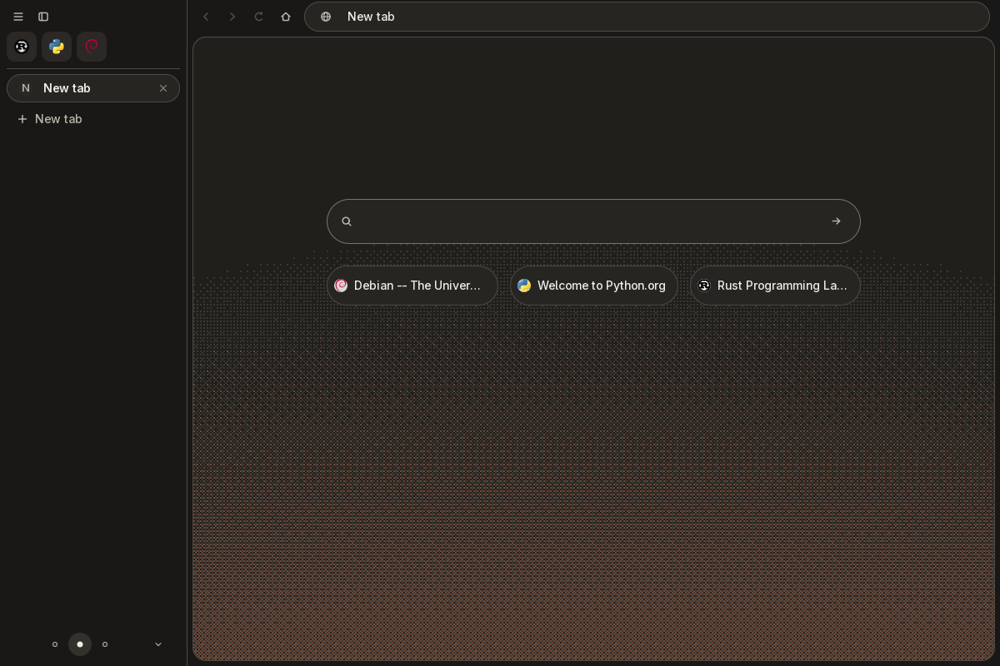
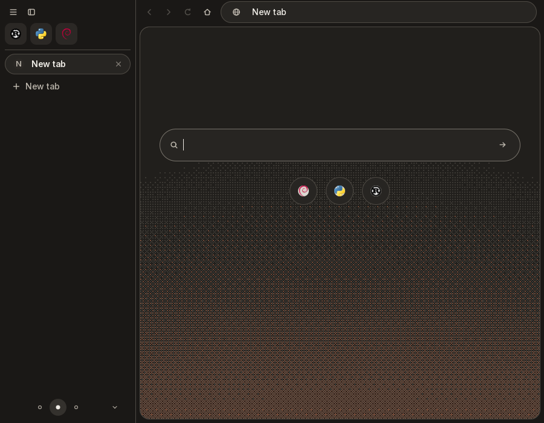
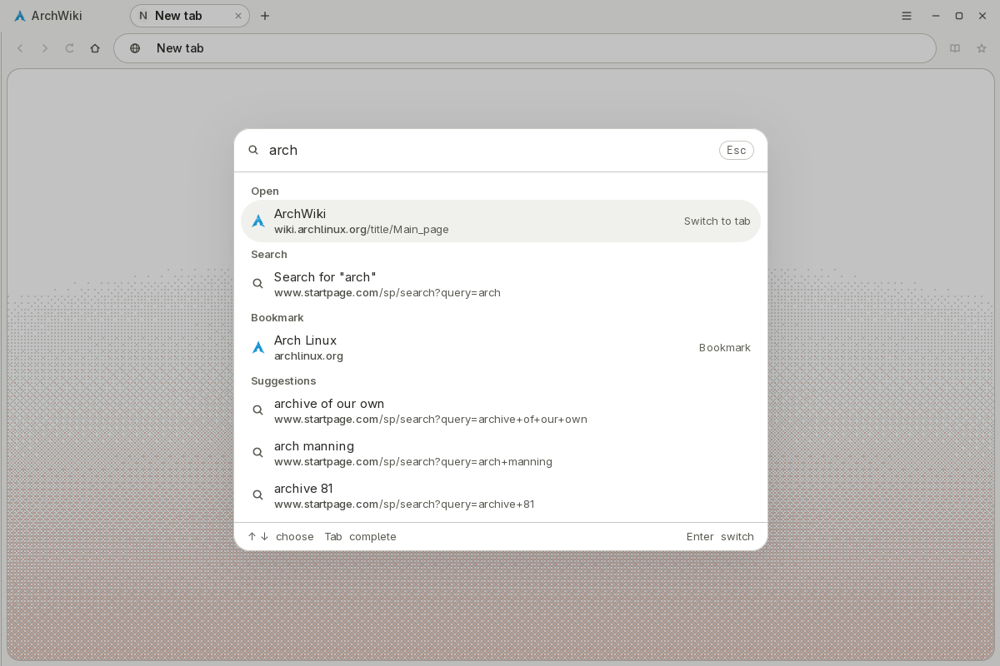
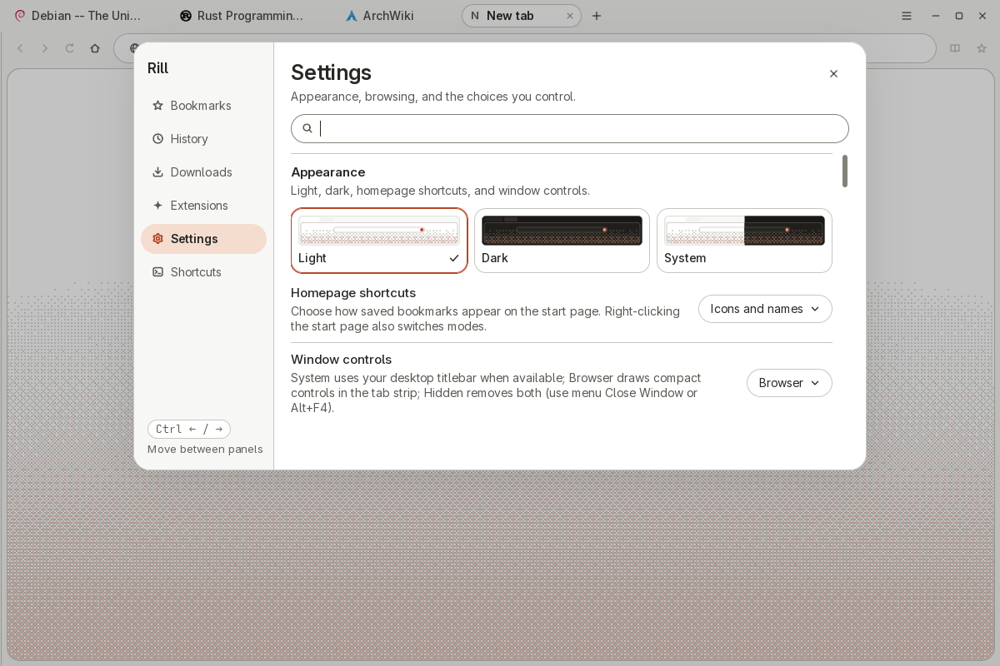
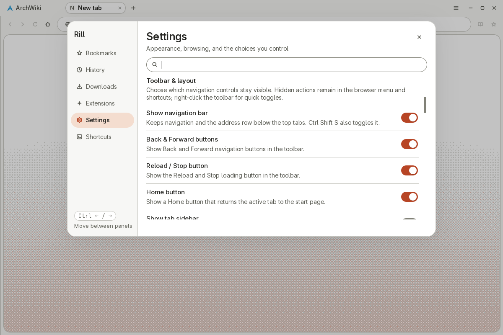
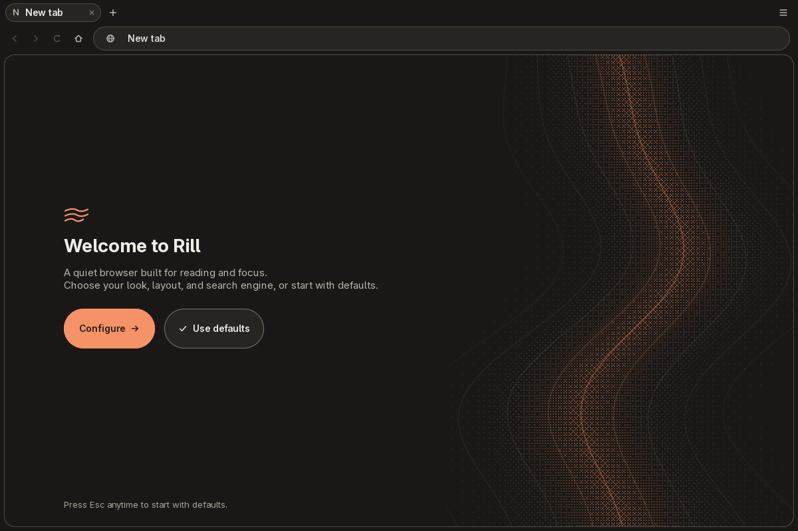
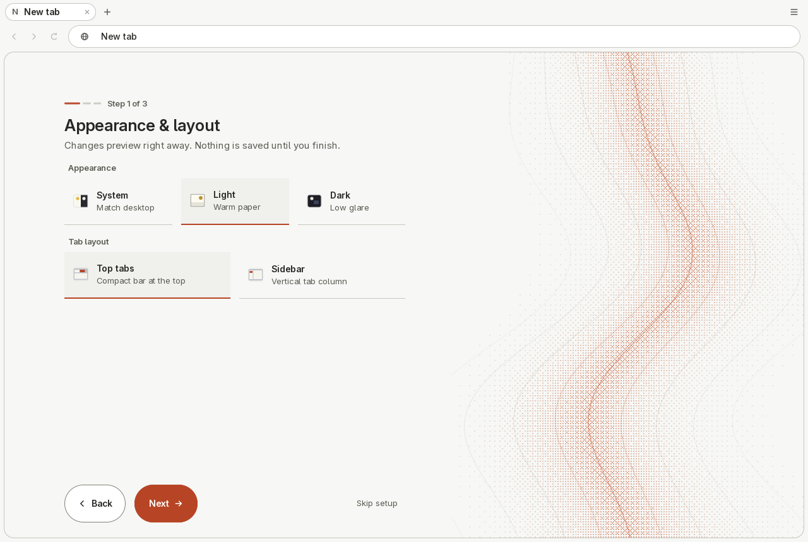
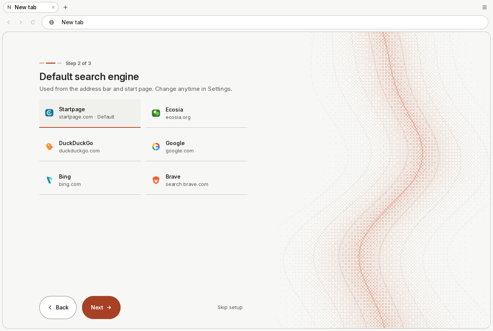

Screenshots
Twenty captures from the native GTK 3 and WebKitGTK build in Light and Dark themes. Select any image to view it full size.
Browsing and start page
Active Wikipedia page with the browser menu open, plus Light and Dark start pages.

Top tabs, bookmarks bar, and menu over Wikipedia with zoom controls, Reading Mode (Ctrl+Shift+R), per-site blocker toggle, and sidebar switch.

Centered search bar and six saved site shortcuts with browser-drawn window controls.

Dark GTK tab strip, address bar, and start page matching the Light layout.
Tabs and Spaces
Vertical tab sidebar, horizontal top tabs, pinned site favicons, and compact 900px windows.

Pinned site icons at the top of the left rail, vertical tabs below, and Space switcher dots at the bottom.


Vertical tab column, pinned favicons, and Space controls in Dark theme.

Horizontal tab bar keeping the active Space menu and pinned favicons aligned on the left.

Horizontal tab layout with the Work Space selector and pinned favicons in Dark theme.
Start-page shortcuts switched to circular icons so six saved sites stay on one line in narrower windows.


Sidebar navigation paired with icon-only shortcuts in a compact 900px window.
Omnibox
Press Ctrl+L to switch to open tabs, search bookmarks, or query your search engine.


Typing arch surfaces the open ArchWiki tab first, followed by Startpage search, bookmarks, and opt-in suggestions.

Inside Work Space, typing rust ranks the open rust-lang.org tab first with Tab and Enter hints.
Settings
Searchable GTK settings overlay for appearance, toolbar visibility, Spaces, history, bookmarks, downloads, extensions, and shortcuts.


Choose Light, Dark, or System themes, start-page shortcut style, and System, Browser, or Hidden window controls.


Toggle the navigation bar, Back/Forward, Reload, Home button, and tab sidebar individually.

Create, rename, switch, and delete named Spaces with an explicit note that Spaces share profile cookies and history.
Onboarding
First launch opens inside a normal browser tab with live previews and one-click defaults instead of a modal wizard.

Configure appearance, tabs, and search, or select Use defaults (or press Esc) to start browsing.


First-run welcome tab matched to Dark theme.


Pick System, Light, or Dark theme and Top tabs or Sidebar with live preview.


Startpage selected by default alongside Ecosia, DuckDuckGo, Google, Bing, and Brave.

Explicit toggle for live search suggestions (never sent in private tabs or for typed URLs) and optional starter sites.

Setup Step 3 rendered in Dark theme.